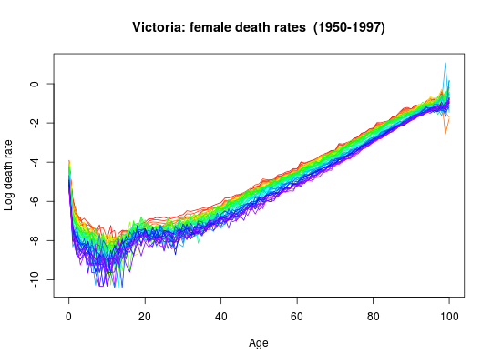

Mortality rates and populations for Australia and Australian states. The
data can be plotted and modelled using the functions in the demography
package such as plot.demogdata and
fdm.
All data are demogdata objects containing the following
components:
Years for which data available
Ages for which data available
A list with matrix components female, male and total with one age group
per row and one column per year.
A list of the same form as rates but containing population numbers instead of mortality rates.
A character string equal to "mortality" in each case.
A character string giving the geographical region.
Smith, L. (2009) The Australian Demographic Data Bank, 1901-2003: Populations [Computer File]. Canberra: Australian Social Science Data Archive, The Australian National University, 2009. Smith, L. (2009) The Australian Demographic Data Bank, 1901-2003: Deaths [Computer File]. Canberra: Australian Social Science Data Archive, The Australian National University, 2009.
The following data sets are included:
australia |
Australia | (1901-2003) |
nsw |
New South Wales | (1901-2003) |
vic |
Victoria | (1901-2003) |
qld |
Queensland | (1901-2003) |
sa |
South Australia | (1901-2003) |
wa |
Western Australia | (1901-2003) |
nt |
Northern Territory | (1901-2003) |
actot |
Australian Capital Territory and overseas territories | (1901-2003) |
All data are from v3.2b of the Australian Demographic Data Bank released 10 February 2005.
plot(vic,years=1950:1997)